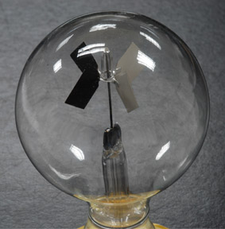

Light Absorption and Reflection by Opaque Objects
The reflection coefficients calculated from Fresnel's laws apply to transparent materials. For opaque materials, the absorption coefficient for visible light can vary greatly. A high absorption coefficient for all visible wavelengths gives a surface a black appearance. A black surface will absorb energy more rapidly than a white object. An example occurs in the demonstration device sometimes called a "radiometer", though it is not immediately evident how it responds to wavelengths other than the visible range.
|

|
The device has light metallic vanes that are black on one side and white or highly reflective on the other. The framework of vanes is suspended on a pin so that it can rotate freely. Placed near a directional source of light, the vanes will turn in a direction that shows that the force on the dark surface is larger than that on the white surface. The direction of rotation is attributed to the greater heating of the black surface.
|
|
Index
Blackbody radiation concepts
Heat transfer concepts |